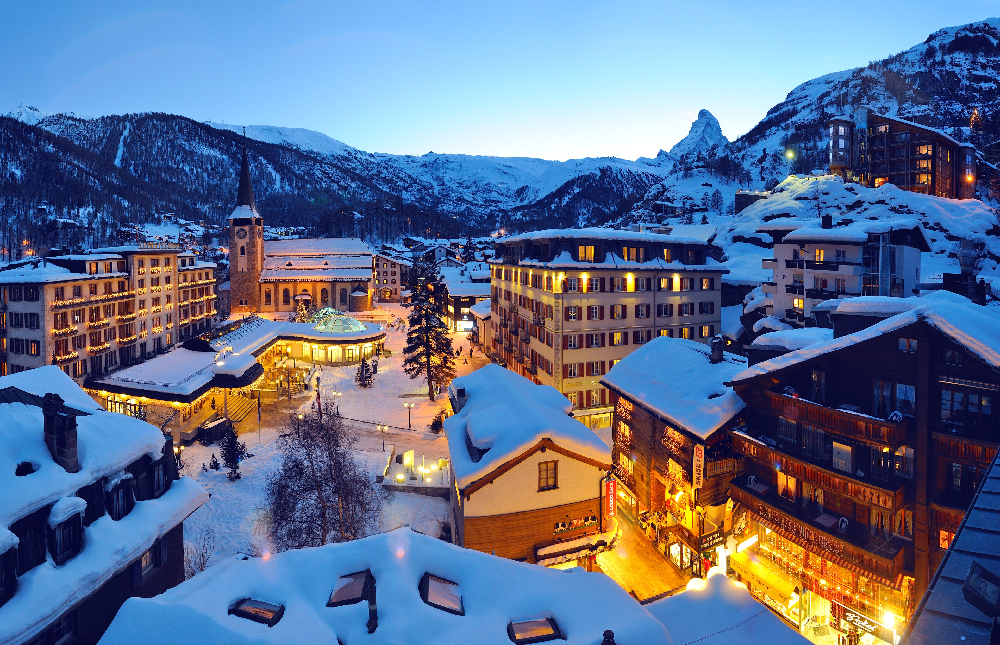
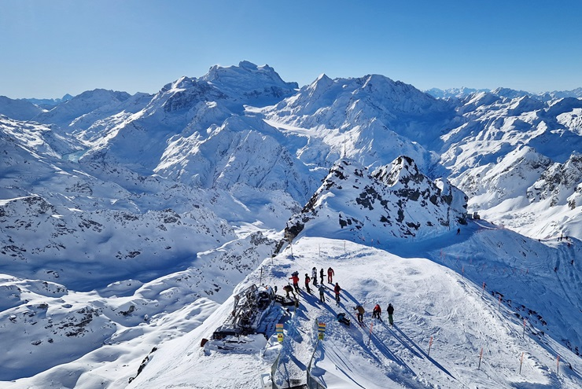
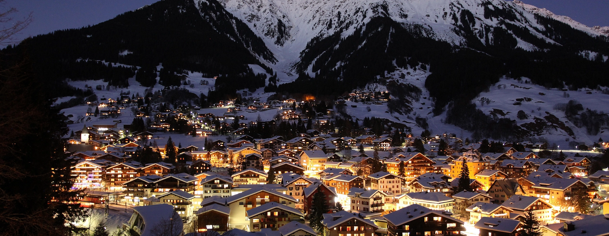
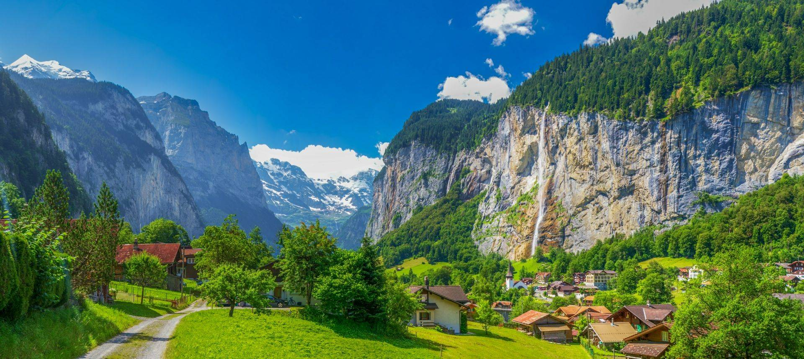
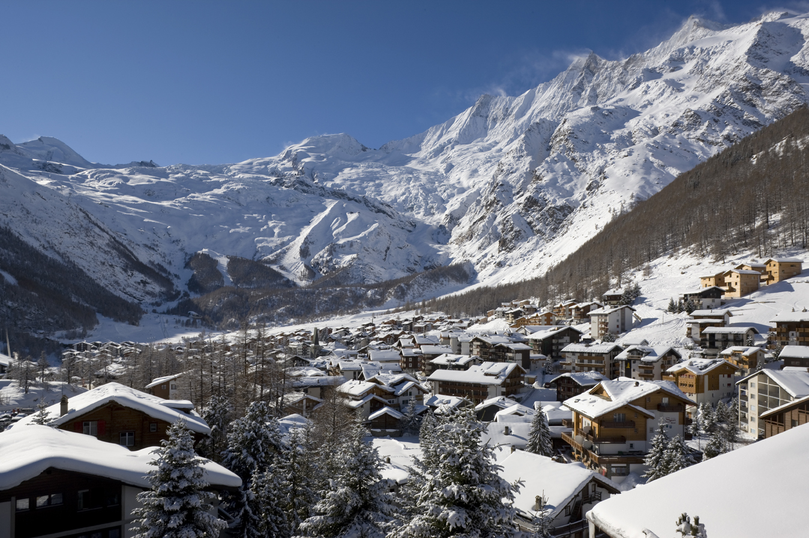

Switzerland is the spiritual home of Alpine skiing. With over 200 ski resorts and more than 7,000 km of marked runs, the country offers winter sports experiences that range from beginner-friendly nursery slopes to hair-raising expert descents. The ski season generally runs from December to April, with high-altitude glacial skiing available year-round in some resorts.
Top Ski Resorts

Zermatt
Ski in the shadow of the Matterhorn. This car-free village offers 360 km of runs, glacier skiing at 3,883m, and some of the most dramatic scenery in the Alps. Linked with Cervinia in Italy.

Verbier
Part of the massive 4 Vallées ski area with 410 km of runs. Famous for its challenging off-piste terrain, luxury chalets, and vibrant après-ski scene. A playground for expert skiers.

St. Moritz
The original luxury ski resort. Host of two Winter Olympics, it offers 350 km of runs, glamorous hotels, and the famous Cresta Run bobsled track. Jet-set atmosphere guaranteed.

Davos / Klosters
Europe's highest town hosts a vast ski area (300 km of runs) popular with families and intermediates. Klosters is the charming village preferred by royalty.

Grindelwald / Wengen
The Jungfrau ski region covers 213 km of runs in arguably the most spectacular mountain setting in the Alps. Car-free Wengen is especially charming.

Saas-Fee
A car-free village in a stunning glacial bowl. It offers year-round glacier skiing, an excellent ski school, and a relaxed, family-friendly atmosphere.
Ski Pass Options
| Resort | Ski Area (km) | Altitude Range | Best For |
|---|---|---|---|
| Zermatt | 360 km | 1,620 – 3,883m | All levels, glacier skiing |
| 4 Vallées (Verbier) | 410 km | 821 – 3,330m | Experts, off-piste |
| St. Moritz | 350 km | 1,720 – 3,303m | Intermediates, luxury |
| Davos-Klosters | 300 km | 810 – 2,844m | Families, intermediates |
| Jungfrau Region | 213 km | 943 – 2,971m | Scenery, families |
| Saas-Fee | 100 km | 1,800 – 3,600m | Beginners, families |
Winter Sports Beyond Skiing
- Snowboarding – All major resorts have excellent terrain parks and halfpipes
- Cross-country skiing (Langlauf) – Hundreds of km of groomed tracks through forests and valleys
- Snowshoeing – Explore Alpine landscapes on foot in winter — no experience needed
- Ice skating – Natural and artificial rinks in most mountain towns
- Tobogganing – Some of the world's longest toboggan runs, including the 14km Rodelbahn at Grindelwald
- Ski touring – Backcountry exploration with skins and avalanche safety equipment
- Bobsleigh – Ride a real Olympic bob run at St. Moritz or Saignelégier